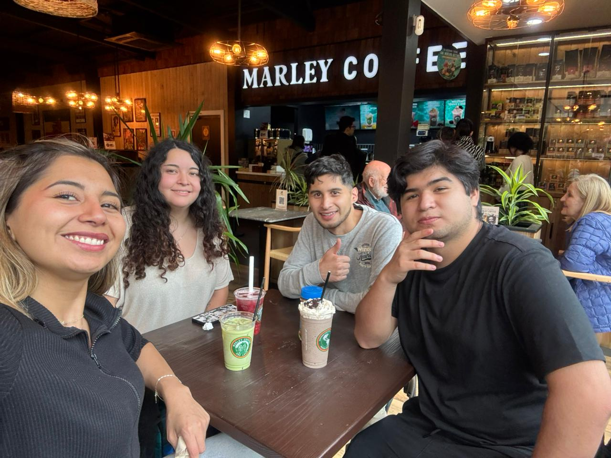
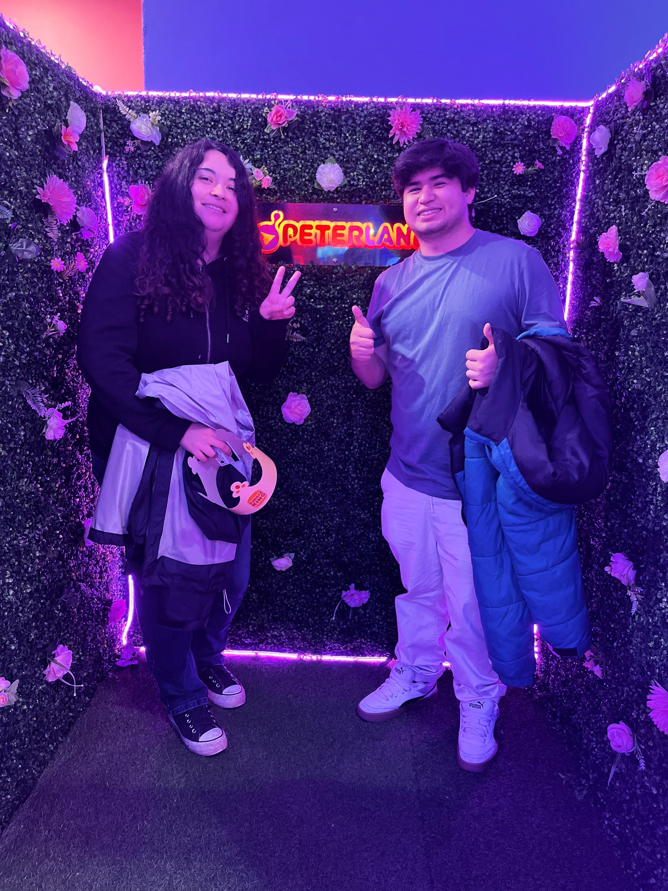
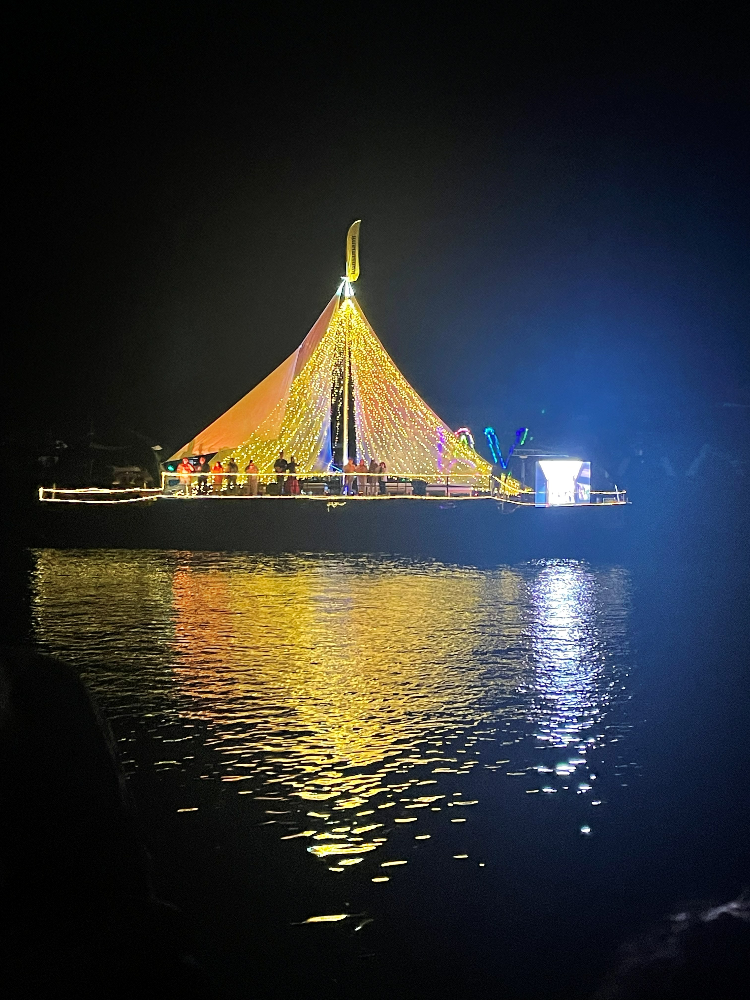
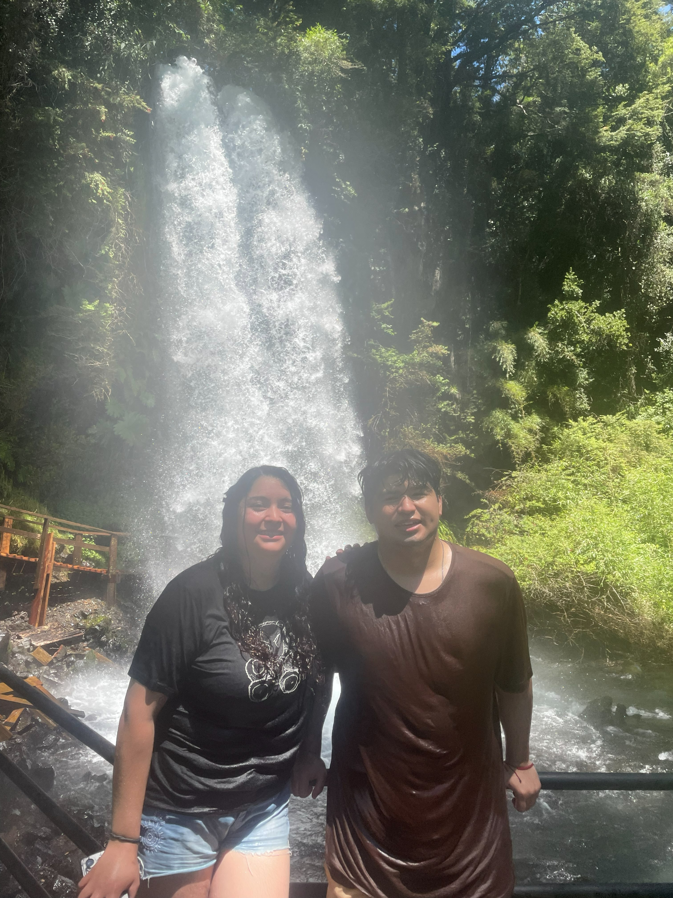

Trailer de viaje
Lo que viene en agosto empieza a sentirse aqui
Un recuerdo convertido en adelanto: como si Valdivia fuera el primer capitulo antes del estreno grande.
Una historia escrita en miradas
El dia en que nuestro para siempre vuelve a estrenarse.
Proximamente
Cartelera de estrenos
Mientras llega el 12 de agosto, cada recuerdo tendra su propio estreno. Algunos aun esperan detras del telon, pero todos llevan tu nombre.
Donde el sur empezo a parecer pelicula.
12 julio Dia en casitaNo todo lo inolvidable pasa lejos.
1 agosto Huilo HuiloEl bosque tambien guardo una parte de nosotros.
8 agosto Te dio nostalgia?Una vuelta al primer detalle que nacio en pantalla.
12 agosto Gran finalEl estreno completo de este aniversario.
Capitulo 01
El primer avance de este viaje: lluvia, cafe, caminos del sur y recuerdos que ya parecen escenas de pelicula.
Trailer de viaje
Un recuerdo convertido en adelanto: como si Valdivia fuera el primer capitulo antes del estreno grande.



Capitulo 02
Porque tambien hay escenas favoritas en lo simple: estar cerca, reir bajito y dejar que el dia pase con calma.
Escena intima
Un momento tranquilo, de esos que no necesitan escenario grande para sentirse como pelicula.
Capitulo 03
Un capitulo de bosque, agua y caminos del sur: esos dias que parecen guardados para cuando agosto necesite recordar lo bonito que viene.
Trailer de bosque
Huilo Huilo queda como otro adelanto de nuestra pelicula: naturaleza, risas y una escapada que se siente imposible de olvidar.

Voz en off
Esta parte se abre el dia del estreno completo. No para contar una historia perfecta, sino para recordar que incluso en los dias simples hay algo que vuelve a elegirnos: la forma en que nos miramos, nos buscamos y hacemos que cualquier lugar se sienta como nuestro.
Un recuerdo antes del estreno
Si este aniversario es el estreno de lo que viene, esta es la escena que vuelve al comienzo: el primer detalle digital, guardado como una carta pequena para recordarte que siempre quise hacerte sentir especial.
Volver al primer detalleSolo en nuestra vida
El 12 de agosto no es solo una fecha: es volver al inicio con mas recuerdos, mas razones y una promesa que sigue creciendo.